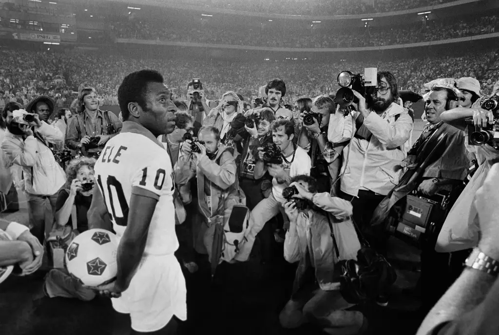

Brazil Football Legend Pelé

Football legend Pelé in front of the media in a stadium
World Cup records
- Pele is the youngest scorer, youngest hat-trick scorer, youngest final player and youngest final scorer in World Cup history.
- Gunnar Gren, who competed against Brazil in the 1958 decider, made his Sweden debut before Pele was born. Never has such an age gap – 20 years – existed between opponents in a World Cup final.
- Pele became the second man to score in four World Cups in 1970. He was pipped to the record by merely three minutes by West Germany's Uwe Seeler.
- Vava, Pele, Paul Breitner, Zinedine Zidane and Kylian Mbappe are the only players to have scored in two World Cup finals.
- Pele registered six assists at Mexico 1970 – a record for one World Cup. Four players managed five: Robert Gadocha at Germany 1974, Pierre Littbarski at Spain 1982, Diego Maradona at Mexico 1986 and Thomas Hassler at USA 1994. Pele also recorded an unprecedented three assist in deciders: one against Sweden in 1958 and two against Italy in ’70.